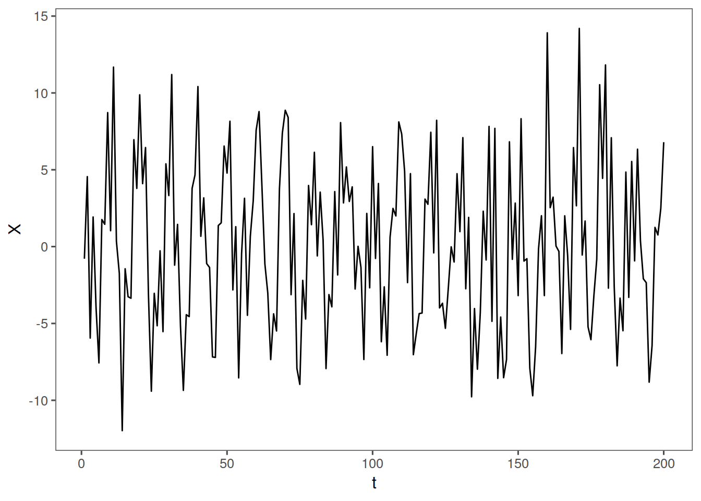

Unit 8 AR(1) Models and Filtering
8.1 Algebra review
Be able to find the roots of a 2nd order polynomial
\[ x = \frac{ - b \pm \sqrt {b^2 - 4ac} }{2a} \]
\[ z = a + bi\] \[ i = \sqrt{-1} \] a is real b is imaginary \[ z^{*} = a - bi \] z* is complex conjugate
It is basically a vector so absolute value is just the magnitude
Unit circle is the values in the complex plane in which the magnitude of z is equal to one. If Z is a complex number with magnitude greater than one, it is outside the unit circle.
quad_form <- function(a, b, c) {
rad <- b^2 - 4 * a * c
if (is.complex(rad) || all(rad >= 0)) {
rad <- sqrt(rad)
} else {
rad <- sqrt(as.complex(rad))
}
round(cbind(-b - rad, -b + rad)/(2 * a), 3)
}
quad_form(c(1, 4), c(1, -5), c(6, 2))## [,1] [,2]
## [1,] -0.500-2.398i -0.500+2.398i
## [2,] 0.625-0.331i 0.625+0.331i# [,1] [,2] [1,] -0.500-2.398i -0.500+2.398i [2,] 0.625-0.331i 0.625+0.331i8.2 Linear filters
A filter will turn \(Z_t\) into \(X_t\)
for example:
\[\mathrm{difference:} X_t = Z_t - Z_{t-1}\]
Moving average also a filter (smoother)
8.2.1 Example
Consider $ Z_1 = 8 , Z_2 =14, Z_3 = 14, Z_4 = 7$
If we apply the difference filter to this, we have that: \[X_2 = 6, X_3 = 0, X_4 = 7\]
Note: the differenced data are a realization of length n-1
We can use the difference filter to remove the wandering behjaviior
8.2.2 5 point moving average
We can only get a realization of n-4. (n-nopoints-1). What does the 5 point moving average do (it averages a point and two points ahead and two behind). This filter can filter out some frequencies
8.3 Types of filters:
- Low pass filter
- Filters out high frequency
- Such as 5 point moving average, it smooths
- High pass filter
- Leaves high freq but removes low freq
- Such as differencing
8.3.1 An example in R
mafun <- function(xs, n) {
stats::filter(xs, rep(1, n))/n
}
dfun <- function(xs, n) {
diff(xs, lag = n)
}
th <- ggthemes::theme_few()
library(tswge)
data(fig1.21a)
ma <- mafun(fig1.21a, 5)
d <- dfun(fig1.21a, 1)
fp <- tplot(fig1.21a) + th
mp <- tplot(ma) + th
dp <- tplot(d) + thAnd here lets view the 5 point moving average
And now a look at the difference filter

8.3.2 An another example
rlz <- gen.sigplusnoise.wge(200, coef = c(5, 3), freq = c(0.1, 0.45), vara = 10,
sn = 1, plot = F)pfun <- function(x, n, l) {
fp <- tplot(x) + th
mp <- tplot(mafun(x, n)) + th
dp <- tplot(dfun(x, l)) + th
list(original = fp, MA = mp, dif = dp)
}
plts <- pfun(rlz, 5, 1)
plts$original